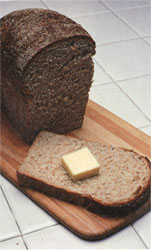
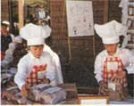

MOTHER'S CHILDREN
Two brothers earn while they learn. By Benjamin and Joseph Watson
Three years ago, when we were nine (Joseph) and eight (Benjamin), we met a lady who sold homemade bread at local fairs and meetings. We liked the idea, so we asked our mom if we could get a Bosch bread maker and start our own business: Watson Bread Brothers.
We made some mistakes at first-like on the first batch when we poured all the water into the bowl of flour instead of the other way around. One time we.forgot to put the yeast in the dough. The bread looked sort of funny in the oven-it wouldn't rise! We tried sprinkling a little bit of yeast on top of the loaves, but that didn't work.
We worked out our problems, though, and now we're doing swell. We grind our own flour with a flour mill and make four to six loaves of honey-sweetened, whole wheat bread at a time. We normally sell 16 loaves of bread a week at $2 each (we could probably sell them for $2.50). One time we baked 100 loaves for a school fair (it took us two weeks) and made $200 in one day! We deposited more than $1,000 in our savings account in our first year of doing business.
We're also Bosch dealers, earning commissions from selling the company's flour mill, bread maker and other kitchen machines. We school at home with our mom, so our bread business is an important part of our education We do our own bookkeeping, ordering, banking, promotional planning and tax reporting as well as our regular school lessons. And we still find time to ski, bike, fish, camp and play touch football.
Having your own business is fun. You can make a lot more money than most kids get in allowances, and it makes us happy to know people are getting good nutrition from eating our 100% whole wheat bread. We realize most kids can't afford $500 for a bread maker and flour mill. Maybe you could do like we did-our mom bought the machines and, in exchange, we give her at least two loaves of bread each week. [Editor's Note: Emily Murphy - see the sidebar - runs a home baking business without either machine.]
After three really great years, we're convinced: A home bread business really is a great way to earn while you learn.
By Emily Murphy
I really enjoy baking bread. After a hard afternoon of being interrupted by my little sister Clare while I'm trying to figure out algebra problems, I can take out all my frustrations on the bread I'm kneading. It's also fun putting a little ball of dough in the bottom of a greased bowl, covering it with a towel, placing it in a sunny window and coming back an hour later to find it's risen all the way to the top of the bowl.
About a year ago, I started selling bread. Mom and Dad invested $9.26 in flour, honey, milk powder, corn oil, salt and yeast to get me started. I decided to sell my loaves for $1.75 each.
I made a flier and asked my dad to make some photocopies of it at work. When he got home, he told me two secretaries saw him copying the flier and both ordered some. I was ecstatic! After I stopped dancing, I made the bread.
I make either 100% whole wheat bread or half-white, half-whole wheat, according to my customer's taste. I make three loaves at a time, selling two to my regular customers (I have five). The third one goes to Mom at a reduced rate to pay for the use of the oven.
Before you sell a new product, you have to experiment with it until you get it right (your family will make excellent guinea pigs). I'd been making bread for a long time before I marketed it, but about a year ago my grandmother, a bagel fanatic, asked me to start making and selling bagels. I dug out a whole wheat bagel recipe. The first thing that struck me was that you have to boil bagels in water for five minutes. I couldn't imagine why, but I mixed up the dough, kneaded it and let it rise twice. Then I boiled some water and dropped four puny-looking bagels into it. Five minutes later, I lifted the bagels out and was flabbergasted. They were three times bigger than before! I finished boiling and baking them. They were too salty and crumbly, but were still delicious. I've since cut down on the salt and learned to put them together more firmly-and now I'm ready to sell bagels as well as bread.
|
 The staff of life can be the stuff of income. The Watson brothers' whole wheat loaves bring in over $1,000 a year. |
 Emily Murphy sells both bread and bagels. |
|